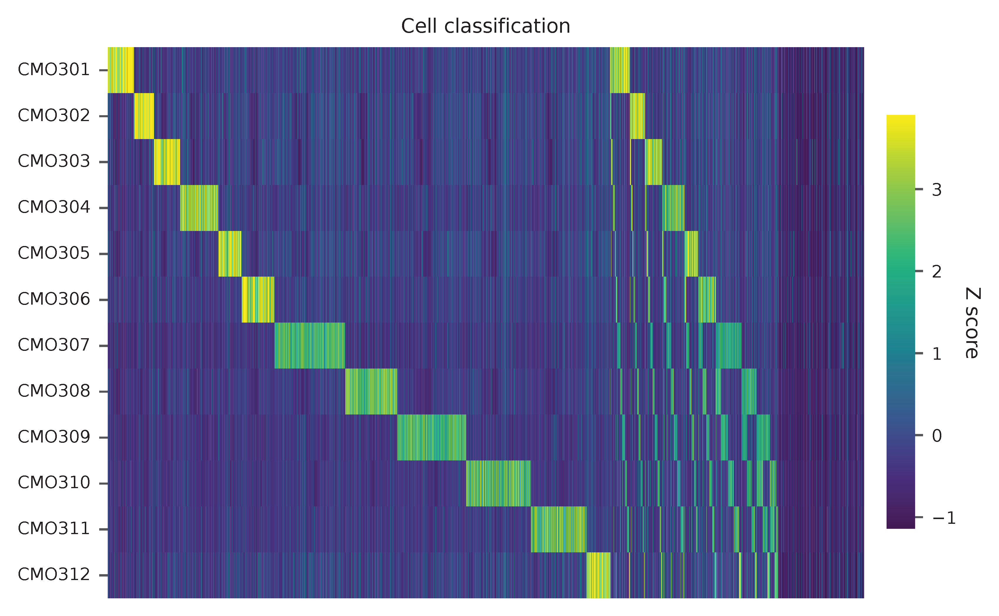

30k Mouse E18 Combined Cortex, Hippocampus and Subventricular Zone Nuclei Multiplexed¶
Dataset: 30k Mouse E18 Combined Cortex, Hippocampus and Subventricular Zone Nuclei Multiplexed, 12 CMOs
The detailed description of this dataset can be found here.
Note
The processing of QC, barcode extraction and matrix generation is similar to 10k 1:1 Mixture of Raji and Jurkat Cells Multiplexed, 2 CMOs.
Demultiplexing¶
In summary, 799,808,703 of total 1,238,424,843 read pairs have the valid structure (-cb_m 2, -fb_m 1). The average UMIs per cell is 22,962.0 for this feature barcode library.
Inspect feature count matrix.
In [1]: import pandas as pd
In [2]: m = pd.read_csv("matrix_featurecount.csv.gz", index_col=0)
In [3]: m.shape
Out[3]: (12, 59342)
In [4]: m.sum(axis=1)
Out[4]:
CMO301_ATGAGGAATTCCTGC 90849728
CMO302_CATGCCAATAGAGCG 73859662
CMO303_CCGTCGTCCAAGCAT 94388625
CMO304_AACGTTAATCACTCA 112458502
CMO305_CGCGATATGGTCGGA 57147183
CMO306_AAGATGAGGTCTGTG 67979145
CMO307_AAGCTCGTTGGAAGA 191026854
CMO308_CGGATTCCACATCAT 97445798
CMO309_GTTGATCTATAACAG 189936250
CMO310_GCAGGAGGTATCAAT 130990984
CMO311_GAATCGTGATTCTTC 131131183
CMO312_ACATGGTCAACGCTG 55103315
dtype: int64
In [5]: (m > 0).sum(axis=1)
Out[5]:
CMO301_ATGAGGAATTCCTGC 59128
CMO302_CATGCCAATAGAGCG 59088
CMO303_CCGTCGTCCAAGCAT 59096
CMO304_AACGTTAATCACTCA 59194
CMO305_CGCGATATGGTCGGA 58794
CMO306_AAGATGAGGTCTGTG 58932
CMO307_AAGCTCGTTGGAAGA 59306
CMO308_CGGATTCCACATCAT 59078
CMO309_GTTGATCTATAACAG 59292
CMO310_GCAGGAGGTATCAAT 59202
CMO311_GAATCGTGATTCTTC 59204
CMO312_ACATGGTCAACGCTG 58836
dtype: int64
Gaussian mixture model¶
Cells are demultiplexed based on the feature count matrix (CMO abundance). Demultiplexing method 2 (set by -dm) is inspired by the method described on 10x Genomics’ website. A cell identity matrix is generated in the output directory: 0 means negative, 1 means positive (set by --output_directory, default demultiplexed). Use -nm to set normalization method (default clr). Use -p to set the probability threshold for demulitplexing (default 0.9). Set -v to create visualization plots. Use -vm to set visualization method (default tsne).
$ fba demultiplex \
-i matrix_featurecount.csv.gz \
--output_directory demultiplexed \
-dm 2 \
-v
2021-10-05 20:45:58,069 - fba.__main__ - INFO - fba version: 0.0.x
2021-10-05 20:45:58,069 - fba.__main__ - INFO - Initiating logging ...
2021-10-05 20:45:58,069 - fba.__main__ - INFO - Python version: 3.8
2021-10-05 20:45:58,069 - fba.__main__ - INFO - Using demultiplex subcommand ...
2021-10-05 20:46:17,903 - fba.__main__ - INFO - Skipping arguments: "-q/--quantile", "-cm/--clustering_method"
2021-10-05 20:46:17,903 - fba.demultiplex - INFO - Output directory: demultiplexed
2021-10-05 20:46:17,903 - fba.demultiplex - INFO - Demultiplexing method: 2
2021-10-05 20:46:17,903 - fba.demultiplex - INFO - UMI normalization method: clr
2021-10-05 20:46:17,903 - fba.demultiplex - INFO - Visualization: On
2021-10-05 20:46:17,903 - fba.demultiplex - INFO - Visualization method: tsne
2021-10-05 20:46:17,903 - fba.demultiplex - INFO - Loading feature count matrix: matrix_featurecount.csv.gz ...
2021-10-05 20:46:27,051 - fba.demultiplex - INFO - Number of cells: 31,171
2021-10-05 20:46:27,052 - fba.demultiplex - INFO - Number of positive cells for a feature to be included: 200
2021-10-05 20:46:27,163 - fba.demultiplex - INFO - Number of features: 12 / 12 (after filtering / original in the matrix)
2021-10-05 20:46:27,163 - fba.demultiplex - INFO - Features: CMO301 CMO302 CMO303 CMO304 CMO305 CMO306 CMO307 CMO308 CMO309 CMO310 CMO311 CMO312
2021-10-05 20:46:27,164 - fba.demultiplex - INFO - Total UMIs: 713,913,321 / 713,913,321
2021-10-05 20:46:27,218 - fba.demultiplex - INFO - Median number of UMIs per cell: 22,962.0 / 22,962.0
2021-10-05 20:46:27,218 - fba.demultiplex - INFO - Demultiplexing ...
2021-10-05 20:46:29,001 - fba.demultiplex - INFO - Generating heatmap ...
2021-10-05 20:47:17,305 - fba.demultiplex - INFO - Embedding ...
2021-10-05 20:49:27,083 - fba.__main__ - INFO - Done.
According to the description of this dataset:
The four E18 mouse nuclei samples were multiplexed at equal proportions with 3 CMOs per nuclei sample, resulting in a pooled sample labeled with 12 CMOs. Nuclei from the non-multiplexed sample were used as one of the four sample types composing the multiplexed sample.
Heatmap of the relative abundance of features (CMOs) across all cells. Each column represents a single cell. Multiplets have more than one CMOs.
{kind=link}
t-SNE embedding of cells based on the abundance of features (CMOs, no transcriptome information used). Colors indicate the CMO status for each cell, as called by FBA. Twelve singlet clusters and cross-oligo multiplet clusters are clearly present.

Preview the demultiplexing result: the numbers of singlets.
In [1]: import pandas as pd
In [2]: m = pd.read_csv("demultiplexed/matrix_cell_identity.csv.gz", index_col=0)
In [3]: m.loc[:, m.sum(axis=0) == 1].sum(axis=1)
Out[3]:
CMO301 1078
CMO302 824
CMO303 1085
CMO304 1575
CMO305 959
CMO306 1362
CMO307 2912
CMO308 2144
CMO309 2841
CMO310 2675
CMO311 2292
CMO312 951
dtype: int64
Kernel density estimation¶
Cells are demultiplexed based on the abundance of features. Demultiplexing method 4 is implemented based on the method described in McGinnis, C., et al. (2019) with some modifications. A cell identity matrix is generated in the output directory: 0 means negative, 1 means positive. Set -v to create visualization plots.
$ fba demultiplex \
-i matrix_featurecount.csv.gz \
-dm 4 \
-v
2021-12-27 12:03:15,693 - fba.__main__ - INFO - fba version: 0.0.x
2021-12-27 12:03:15,693 - fba.__main__ - INFO - Initiating logging ...
2021-12-27 12:03:15,693 - fba.__main__ - INFO - Python version: 3.9
2021-12-27 12:03:15,693 - fba.__main__ - INFO - Using demultiplex subcommand ...
2021-12-27 12:03:18,145 - fba.__main__ - INFO - Skipping arguments: "-q/--quantile", "-cm/--clustering_method", "-p/--prob"
2021-12-27 12:03:18,145 - fba.demultiplex - INFO - Output directory: demultiplexed
2021-12-27 12:03:18,145 - fba.demultiplex - INFO - Demultiplexing method: 4
2021-12-27 12:03:18,145 - fba.demultiplex - INFO - UMI normalization method: clr
2021-12-27 12:03:18,145 - fba.demultiplex - INFO - Visualization: On
2021-12-27 12:03:18,145 - fba.demultiplex - INFO - Visualization method: tsne
2021-12-27 12:03:18,145 - fba.demultiplex - INFO - Loading feature count matrix: matrix_featurecount.csv.gz ...
2021-12-27 12:03:18,453 - fba.demultiplex - INFO - Number of cells: 31,171
2021-12-27 12:03:18,453 - fba.demultiplex - INFO - Number of positive cells for a feature to be included: 200
2021-12-27 12:03:18,499 - fba.demultiplex - INFO - Number of features: 12 / 12 (after filtering / original in the matrix)
2021-12-27 12:03:18,499 - fba.demultiplex - INFO - Features: CMO301 CMO302 CMO303 CMO304 CMO305 CMO306 CMO307 CMO308 CMO309 CMO310 CMO311 CMO312
2021-12-27 12:03:18,499 - fba.demultiplex - INFO - Total UMIs: 713,913,321 / 713,913,321
2021-12-27 12:03:18,523 - fba.demultiplex - INFO - Median number of UMIs per cell: 22,962.0 / 22,962.0
2021-12-27 12:03:18,523 - fba.demultiplex - INFO - Demultiplexing ...
2021-12-27 12:03:39,128 - fba.demultiplex - INFO - Quantile cutoff: 49
2021-12-27 12:03:51,501 - fba.demultiplex - INFO - Generating heatmap ...
2021-12-27 12:04:07,664 - fba.demultiplex - INFO - Embedding ...
2021-12-27 12:04:56,977 - fba.__main__ - INFO - Done.
Heatmap of relative abundance of feature across all cells. Each column represents a single cell.
{kind=link}
t-SNE embedding of cells based on the abundance of features (no transcriptome information used). Colors indicate the sgRNA status for each cell, as called by FBA.

Preview the demultiplexing result: the numbers of singlets.
In [1]: import pandas as pd
In [2]: m = pd.read_csv("demultiplexed/matrix_cell_identity.csv.gz", index_col=0)
In [3]: m.loc[:, m.sum(axis=0) == 1].sum(axis=1)
Out[3]:
CMO301 1127
CMO302 872
CMO303 1124
CMO304 1562
CMO305 950
CMO306 1386
CMO307 3085
CMO308 2187
CMO309 2914
CMO310 2452
CMO311 2248
CMO312 950
dtype: int64